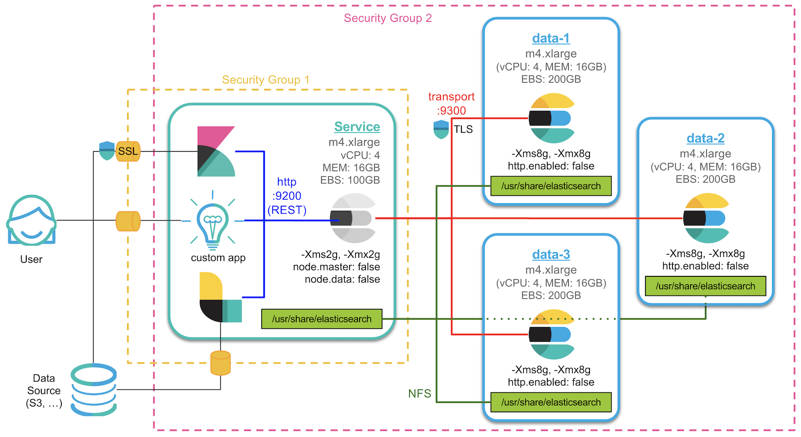
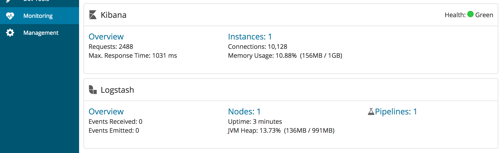
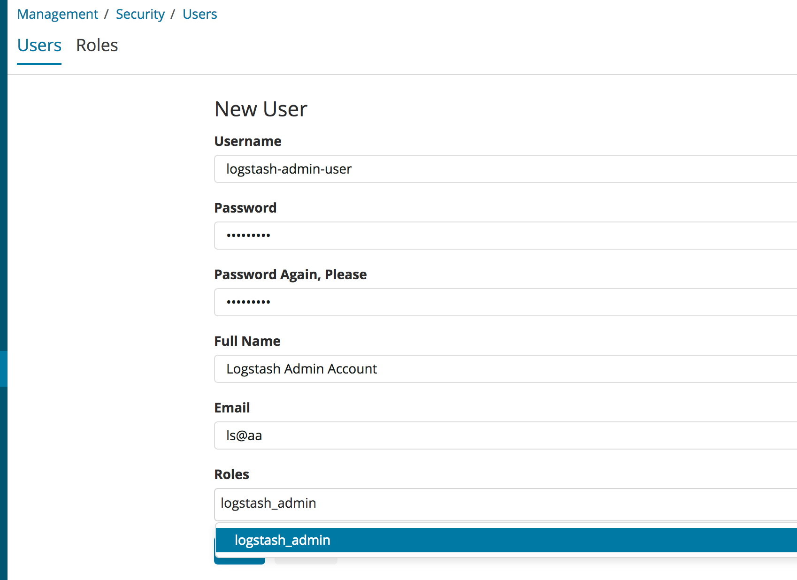
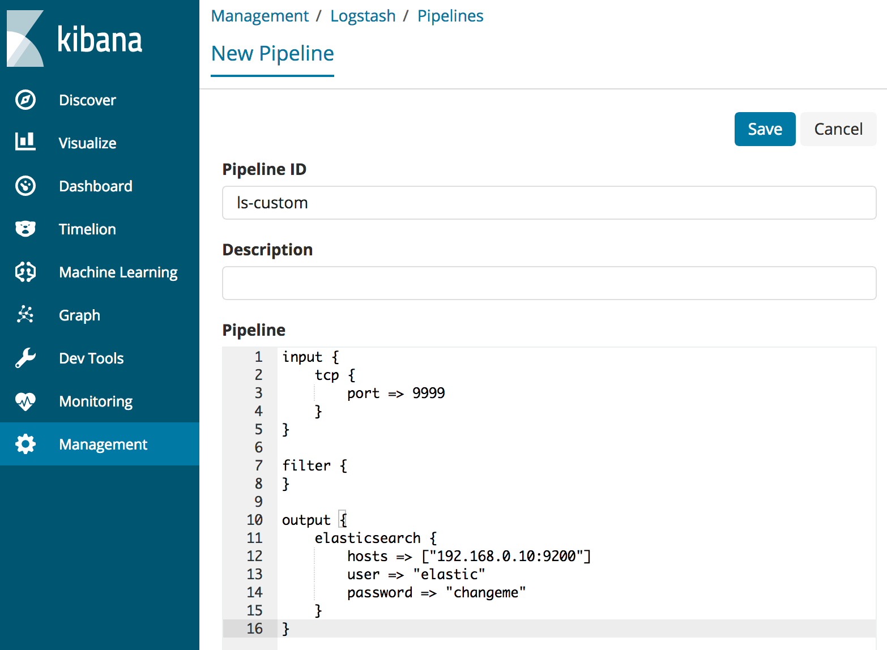
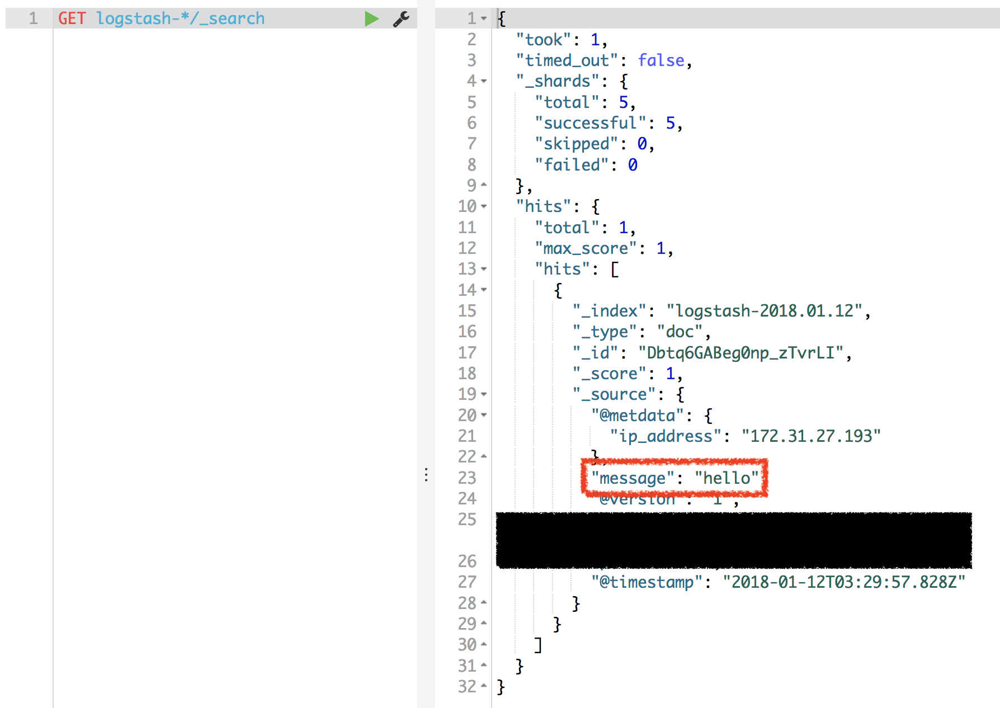
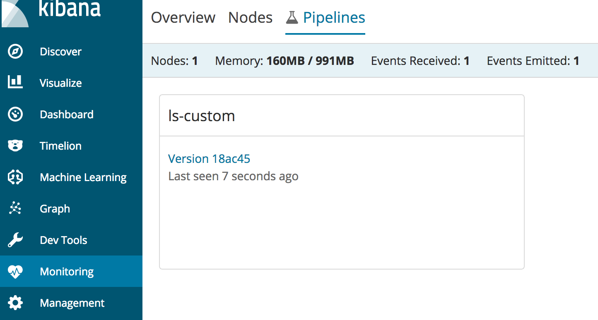
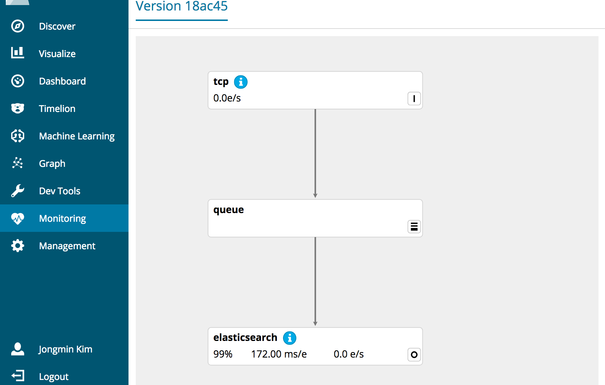
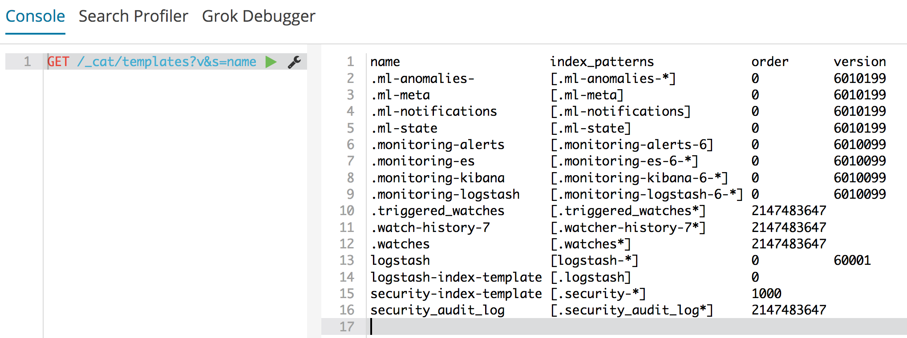

새로 산 게임기 하느라 바쁜 일정 때문에 며칠만에 포스팅 하네요.
오늘은 Logstash 설치 및 Elasticsearch 기본 템플릿 설정을 하도록 하겠습니다. 이전 또는 이후 내용들은 아래 포스트에서 확인하세요.
1. 서버 생성 및 Elasticsearch RPM 설치
2. 메모리, 네트워크 설정 및 플러그인 설치
3. 클러스터 구성 및 마스터, 데이터 노드 설정
4. Kibana 설치 및 X-Pack Monitoring 확인
5. NFS 구성 및 elasticsearch 추가 설정
6. X-Pack Security를 이용한 SSL 및 TLS 설정
7. X-Pack License 적용 및 사용자 생성
8. Logstash 설치 및 Elasticsearch 기본 템플릿 설정
아래는 저희가 지금까지 설치한 아키텍쳐입니다.

오늘은 Service 서버에 Logstash 설치를 먼저 해 보겠습니다. 오늘 포스트에서 Logstash 기본적인 사용 방법을 설명하진 않겠습니다. 설명은
- 공식 도큐먼트 : https://www.elastic.co/guide/en/logstash/current/index.html
- 또는 비디오: https://www.elastic.co/kr/webinars/getting-started-logstash
등을 참고 부탁드립니다.
Logstash 설치
Logstash도 지금까지 설치한 Elasticsearch, Kibana와 마찬가지로 서비스로 돌릴 수 있도록 설치 해 보겠습니다.
Logstash도 Elasticsearch와 마찬가지로 Java 에서 실행되며 1.8 버전을 권장합니다. 앞서 Java는 설치했으므로 바로 넘어가겠습니다.
Yum 설치
아래 문서를 참고해서 설치를 진행하겠습니다.
https://www.elastic.co/guide/en/logstash/current/installing-logstash.html#_yum
Yum 설치를 위해 /etc/yum.repos.d/에 logstash.repo 파일을 만들고 아래 내용을 추가합니다.[logstash-6.x]
name=Elastic repository for 6.x packages
baseurl=https://artifacts.elastic.co/packages/6.x/yum
gpgcheck=1
gpgkey=https://artifacts.elastic.co/GPG-KEY-elasticsearch
enabled=1
autorefresh=1
type=rpm-md
그리고 설치합니다.
sudo yum install logstash |
Logstash의 RPM 버전 설치 경로들은 아래와 같습니다.
- 기본 프로그램 ($LS_HOME) :
/usr/share/logstash- 실행 파일 :
bin/logstash
- 실행 파일 :
- 설정 :
/etc/logstashlogstash.ymljvm.optionslog4j2.propertiesstartup.options
- 파이프라인 설정 (path.config) :
/etc/logstash/conf.d - 플러그인(path.plugins) :
/usr/share/logstash/plugins - 데이터 (추가 플러그인 설치 등) :
/var/lib/logstash - 로그 (path.logs) :
/var/log/logstash
설치가 끝나고 logstash를 시작하기 위해서는 initctl를 사용합니다.sudo initctl start logstash
실행중인 logstash를 정지하려면 아래 명령을 사용합니다.sudo initctl stop logstash
X-Pack 설치
6.0 부터는 Logstash도 X-Pack을 설치할 수 있습니다. X-Pack을 설치하게 되면 Logstash 상태 모니터링과 파이프라인 뷰어, 파이프라인 빌더 등의 사용이 가능합니다.
우선 설치 경로로 이동해서cd /usr/share/logstash
X-Pack을 설치합니다.sudo bin/logstash-plugin install x-pack
그리고 logstash.yml 파일에 사용자와 ID, password를 등록 해 줘야 합니다. 2. 메모리, 네트워크 설정 및 플러그인 설치 에서 생성한 logstash_system id를 사용합니다.
Logstash 모니터링 설정
[ ]$ sudo vim /etc/logstash/logstash.yml |
저희는 elasticsearch의 네트워크 설정을 했기 때문에 xpack.monitoring.elasticsearch.url에 실제 IP 주소를 적어야 합니다.
위 내용을 입력하고 나면 이제 Kibana 에서 Logstash 모니터링이 가능합니다.

Logstash 관리 기능 설정
Kibana에서 Logstash 관리 기능의 사용이 가능합니다. 먼저 사용자 중에 logstash_admin 권한을 가진 사용자가 필요합니다. Kibana 에서 logstash-admin-user 라는 이름으로 사용자를 추가하겠습니다. 이 사용자에게는 logstash_admin 그리고 logstash_system 권한을 부여하도록 합니다.

logstash.yml에 아래 내용을 추가 해 줍니다.
xpack.management.enabled: true |
xpack.management.elasticsearch.password 항목에는 당연히 logstash-admin-user 사용자의 계정 비밀번호를 넣으면 됩니다. 그리고 xpack.management.pipeline.id 항목에 내가 관리자 화면에서 사용할 Logstash 파이프 ID 들을 추가 해 줍니다. 저는 ls-custom 이라는 id를 추가 해 보았습니다. 뒤에 나오는 파이프라인 관리 화면에서는 이곳에 정의된 ID의 파이프들만 추가가 가능합니다.
Logstash 관리 화면에서 파이프라인 추가
이제 Logstash를 시작하고 Kibana의 Management > [Logstash] Pipelines 메뉴에 들어가서 add 버튼을 눌러 ls-custom 파이프를 추가 해 보겠습니다.

위 그림과 같이 입력은 tcp 의 9999 포트에서 입력 받아 출력은 elasticsearch 로 해 보겠습니다.
이제 콘솔에서 nc(NetCat) 명령을 이용해서 9999 포트로 “hello” 라는 메시지를 전송 해 보겠습니다.
[ ]$ echo 'hello' | nc 172.31.27.193 9999 |
그리고 logstash-* 인덱스를 확인 해 보면 "message": "hello" 인 도큐먼트가 입력된 것을 확인할 수 있습니다.

모니터 화면에서 파이프라인 확인
Monitoring > [Logstash] Pipelines 로 들어가 보면 방금 만든 ls-custom 파이프가 보입니다.

클릭하고 들어가면 자세한 파이프를 볼 수 있습니다.

참고로 파이프라인 관리 도구는 X-Pack Gold 라이센스 이상, 파이프라인 모니터링 도구는 X-Pack Basic 라이센스에서 사용이 가능합니다. 라이센스는 아래 링크에서 확인하세요.
https://www.elastic.co/kr/subscriptions
기본 Template 설정
_template API를 사용하면 특정한 인덱스 이름등에 대해서 setting, mapping 등의 값들을 미리 정해줄 수 있습니다.GET /_cat/templates 또는 GET /_templates/템플릿이름 을 이용해서 지금 설정되어 있는 템플릿들과 세부 내용들을 볼 수 있습니다.

Elasticsearch 가 가지고 있는 몇가지 기본 설정들이 있는데, 저희는 클러스터가 작고 노드가 3개밖에 없으므로 몇가지 기본 설정을 좀 변경 해 주겠습니다.
PUT _template/basic |
"index_patterns" : ["*"]: 앞으로 이 클러스터에서 생성될 모든 인덱스에 적용합니다."order": "0": 이 값이 높을수록 템플릿의 우선순위가 높으며, 지금 만든 basic 템플릿은 우선순위가 0으로 가장 낮습니다. logstash-* 와 같은 인덱스 패턴에 적용되는 또다른 템플릿이 order:1 등으로 설정되게 되면 해당 이름의 인덱스들은 더 높은 우선순위의 템플릿을 적용받습니다."settings.number_of_shards": 1: 기본 샤드 개수를 5개 –> 1개로 변경합니다."settings.refresh_interval": "10s": refresh 주기를 1초 –> 10초 로 변경합니다.
자, 이제 Logstash 설치와 템플릿 설정도 모두 끝났으니 클러스터에 데이터를 입력하고 사용할 준비를 모두 마쳤습니다.
기본 클러스터 구성에 대한 내용은 지금까지의 블로그 포스트 시리즈로 설명을 드렸습니다.
앞으로 유용한 설정이나 운영 기법 등은 기회가 되는 대로 별도 개별 포스트 또는 새로운 시리즈로 추가하도록 하겠습니다.
1. 서버 생성 및 Elasticsearch RPM 설치
2. 메모리, 네트워크 설정 및 플러그인 설치
3. 클러스터 구성 및 마스터, 데이터 노드 설정
4. Kibana 설치 및 X-Pack Monitoring 확인
5. NFS 구성 및 elasticsearch 추가 설정
6. X-Pack Security를 이용한 SSL 및 TLS 설정
7. X-Pack License 적용 및 사용자 생성
8. Logstash 설치 및 Elasticsearch 기본 템플릿 설정